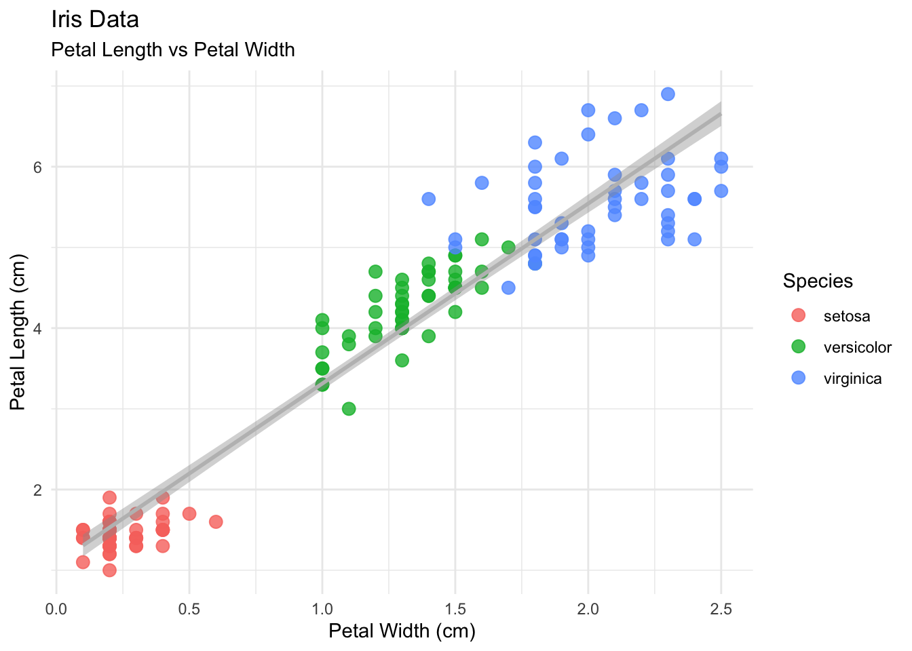
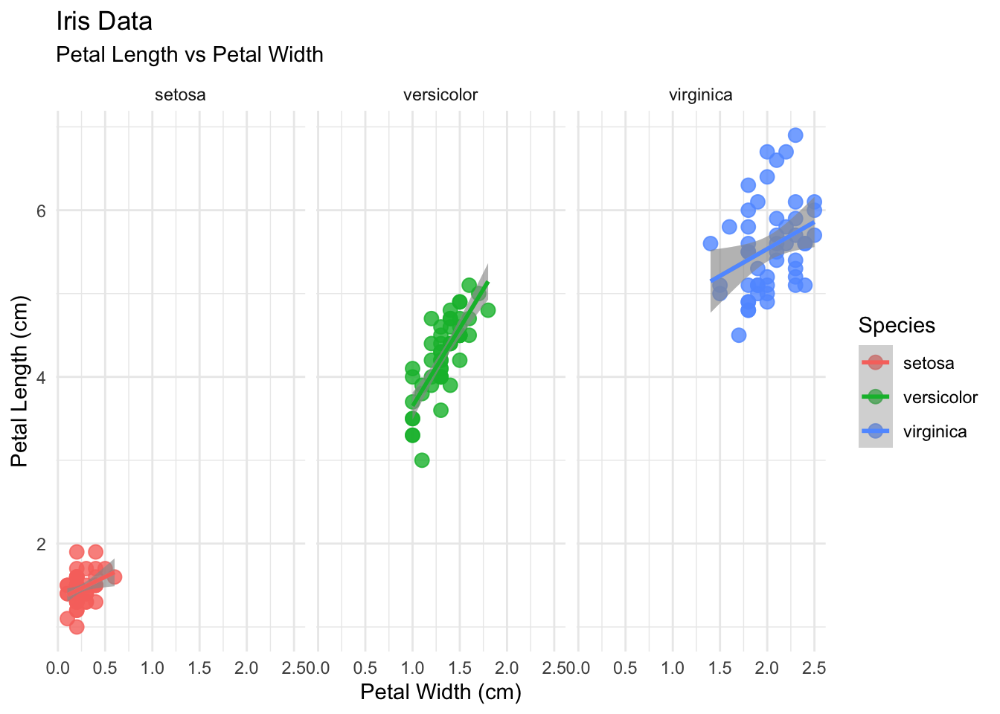

Preparation
The generic steps in data analysis is to
- Load software
- Load data
- filter
- transformations
- Inspect data
- Plot data
In this summary I follow this paradigm with very simplistic examples - primarily to illustrate quatro functionality, rather than data science.
Load packages
Every analysis comes wityh certain software requirements (and dependencies). Here we load the frequenly used tidyverse which is a collection of R package with many useful tools
It’s best practice to record all packages
R version 4.2.3 (2023-03-15)
Platform: x86_64-apple-darwin13.4.0 (64-bit)
Running under: macOS Big Sur ... 10.16
Matrix products: default
BLAS/LAPACK: /Users/manke/miniconda3/envs/web/lib/libopenblasp-r0.3.21.dylib
locale:
[1] C/UTF-8/C/C/C/C
attached base packages:
[1] stats graphics grDevices utils datasets methods base
other attached packages:
[1] lubridate_1.9.2 forcats_1.0.0 stringr_1.5.0 dplyr_1.1.1
[5] purrr_1.0.1 readr_2.1.4 tidyr_1.3.0 tibble_3.2.1
[9] ggplot2_3.4.1 tidyverse_2.0.0
loaded via a namespace (and not attached):
[1] pillar_1.9.0 compiler_4.2.3 tools_4.2.3 digest_0.6.31
[5] timechange_0.2.0 jsonlite_1.8.4 evaluate_0.20 lifecycle_1.0.3
[9] gtable_0.3.3 pkgconfig_2.0.3 rlang_1.1.0 cli_3.6.1
[13] yaml_2.3.7 xfun_0.38 fastmap_1.1.1 withr_2.5.0
[17] knitr_1.42 generics_0.1.3 vctrs_0.6.1 htmlwidgets_1.6.2
[21] hms_1.1.3 grid_4.2.3 tidyselect_1.2.0 glue_1.6.2
[25] R6_2.5.1 fansi_1.0.4 rmarkdown_2.14 tzdb_0.3.0
[29] magrittr_2.0.3 codetools_0.2-19 scales_1.2.1 htmltools_0.5.5
[33] colorspace_2.1-0 utf8_1.2.3 stringi_1.7.12 munsell_0.5.0 Load data
Loading data can also be challenging. In the following we will use the pre-compiled iris data set for simplicity.
R has many predefined data sets to illustrate data science concepts and software functionality. You can inspect more of those using data().
iris to a new data frame d to keep the workflow generic. But this is optional and I may also have used iris instead of d below.You may refer to the original paper in (Fischer, 1936) or by Anderson (1935). Those references are defined in the file iris.bib.
But if you are using R/Rstudio you can also use
Notice that this code chunk is not executed during rendering, but you can copy it conveniently from html to your clipboard.
More information on additional callouts (warning, caution, important) is available here
Data Inspection
| Sepal.Length | Sepal.Width | Petal.Length | Petal.Width | Species |
|---|---|---|---|---|
| 5.1 | 3.5 | 1.4 | 0.2 | setosa |
| 4.9 | 3.0 | 1.4 | 0.2 | setosa |
| 4.7 | 3.2 | 1.3 | 0.2 | setosa |
| 4.6 | 3.1 | 1.5 | 0.2 | setosa |
| 5.0 | 3.6 | 1.4 | 0.2 | setosa |
| 5.4 | 3.9 | 1.7 | 0.4 | setosa |
Table 1 is nicely formatted to show the first few observations of the iris data set. It has 150 rows and 5 columns1.
Descriptive statistics
Below I use panel-tabset to illustrate both text summaries and graphical summaries
| Sepal.Length | Sepal.Width | Petal.Length | Petal.Width | Species | |
|---|---|---|---|---|---|
| Min. :4.300 | Min. :2.000 | Min. :1.000 | Min. :0.100 | setosa :50 | |
| 1st Qu.:5.100 | 1st Qu.:2.800 | 1st Qu.:1.600 | 1st Qu.:0.300 | versicolor:50 | |
| Median :5.800 | Median :3.000 | Median :4.350 | Median :1.300 | virginica :50 | |
| Mean :5.843 | Mean :3.057 | Mean :3.758 | Mean :1.199 | NA | |
| 3rd Qu.:6.400 | 3rd Qu.:3.300 | 3rd Qu.:5.100 | 3rd Qu.:1.800 | NA | |
| Max. :7.900 | Max. :4.400 | Max. :6.900 | Max. :2.500 | NA |


The summary statistics is shown in Table 2 and all pairwise correlations are shown in Figure 1 and in Figure 2 with colour-coded species variable. Notice that the table reference does not seem to work within tabsets.
Columns
Sometimes we may want to define columns
The average petal length is 3.76 cm and the average petal width is 1.2 cm.
The data dimensions is 150, 5.
Plotting with ggplot2
Coloured by species
Code
p <- d %>%
ggplot(aes(x = Petal.Width, y = Petal.Length)) +
geom_point(aes(color=Species), size = 3, alpha = 0.8) +
geom_smooth(method="lm", color="grey") +
theme_minimal() +
labs(title = "Iris Data",
subtitle = "Petal Length vs Petal Width",
x = "Petal Width (cm)",
y = "Petal Length (cm)",
color = "Species",
shape = "Species") +
theme_minimal()
# scale_color_manual(values = c("darkorange","purple","cyan4"))
p
ggsave('quarto_demo.png', plot=p)
Facet Wrap

Figure 3 colors species but runs regression over all samples. Figure 4 facets the data by species and shows also the species-specific regression lines.
Here is just another reference to a figure way back up: Figure 1 (But notice that it works only when the corresponding tabset panel is open).
References
Footnotes
Note that we may have filtered the data as part of the pre-processing steps.↩︎